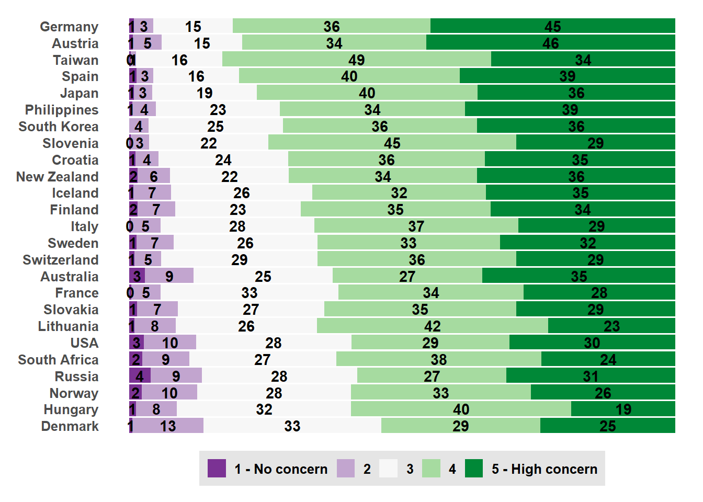
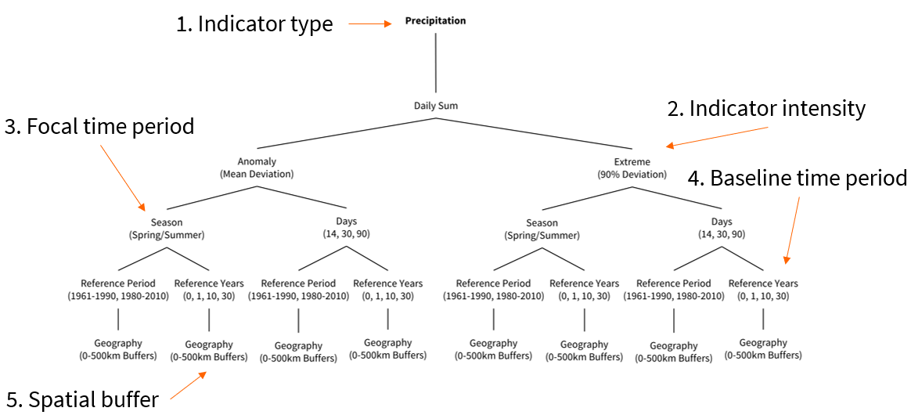
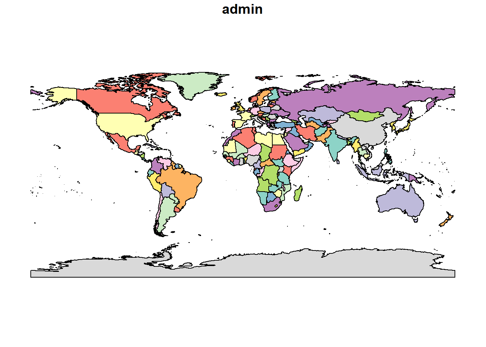
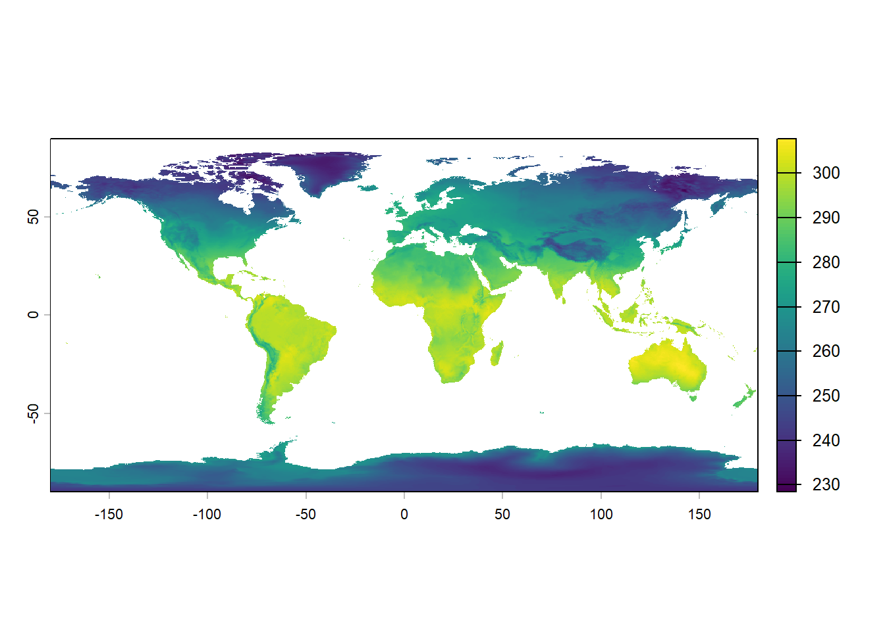
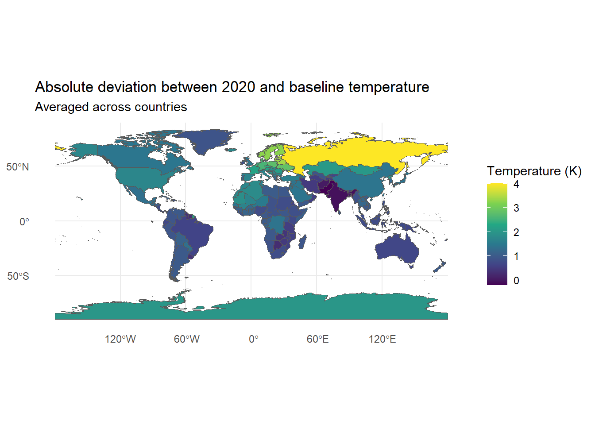
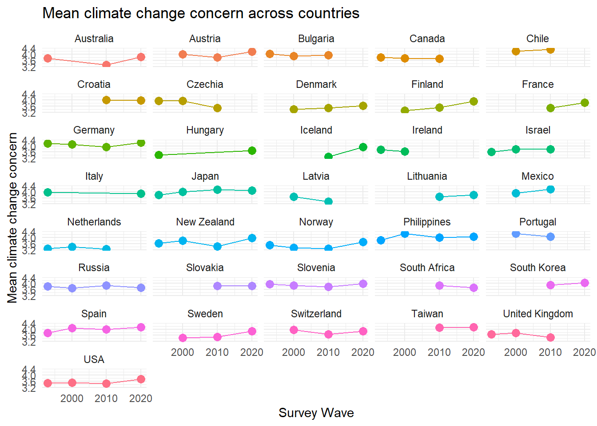
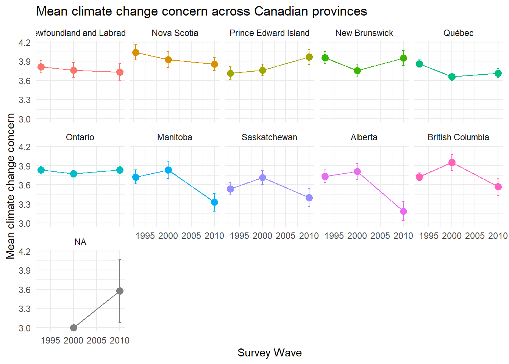
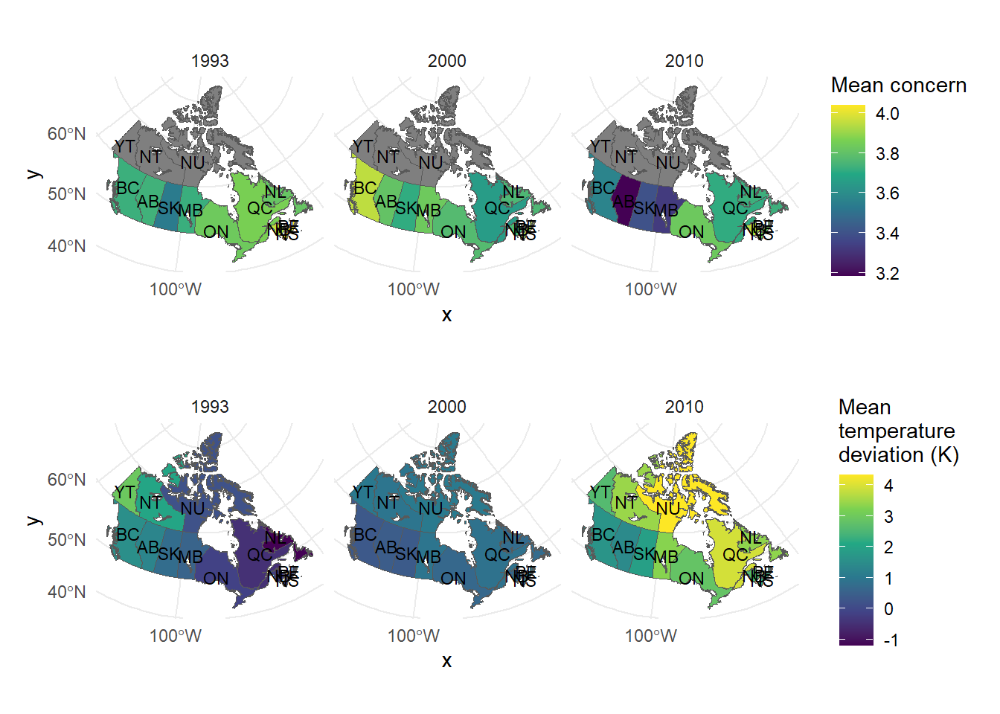
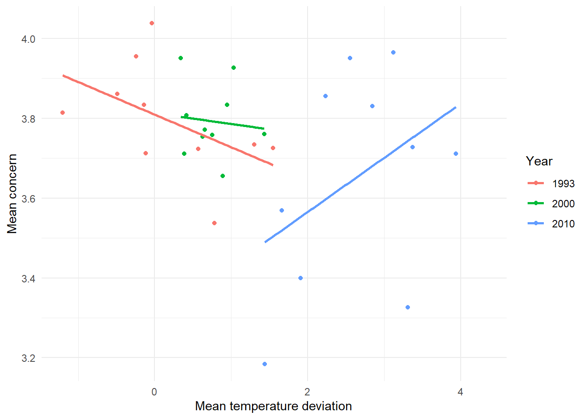

library(haven) # For working with SPSS datafiles
library(sjlabelled) # To remove labels from SPSS datafiles
library(tidyverse) # For so muchCase Study: Linking ISSP survey data
The ISSP data
The International Social Survey Programme (ISSP) is a cross-national programme conducting annual surveys on diverse topics like:
- the role of government 🏛️,
- inequality 💰,
- work orientations 👷,
- the environment 🏞️,
- or national identity 🇫🇷 🇿🇦 🇮🇳.
The ISSP was established in 1984 by the founding members Australia, Germany, Great Britain, and the US. Currently, the ISSP has 44 member states. Since its foundation, over one million respondents have participated in the surveys of the ISSP. All datasets are publicly available and free of charge.
For this case study, we are working with the cumulation of the environment module of the ISSP, which integrates the four existing survey rounds on the environment (1993, 2000, 2010, and 2020). Let’s assume we are interested in the role of long-term climate change patterns on how they affect environmental attitudes on the country-level. We first show a “manual” approach of retrieving and processing the EO indicator before introducing an easy alternative with the gxc-package.
Setup
For loading and wrangling with the data, we need some packages. Keep in mind to install (install.packages()) those packages first before loading with the library-function.
After downloading the data file from the website, place it in your project folder. We are loading the SPSS-file and directly remove all labels.
issp <- haven::read_stata("./data/issp_env/ZA8793_v1-0-0.dta") |>
sjlabelled::remove_all_labels()Let’s clean the dataset. We want to investigate the relationship between the experience of extreme heat and climate change concern. Let’s subset the datafile to variables which are necessary for us and rename directly. We will keep the variables measuring the survey year, the country of residence of the respondent, and the climate change concern item (v42).
issp <- issp |>
select(
year,
country,
concern = v42
)You can check out the codebook of the dataset to find out the country names for the numeric values in the dataset. Let’s label it. We will also combine responses from Northern Ireland and Great Britain into “United Kingdom” and store it in a new variable.
issp <- issp |>
mutate(
country = factor(country, levels=c(36, 40, 100, 124, 152, 158, 191, 203,
208, 246, 250, 276, 348, 352, 372, 376,
380, 392, 410, 428, 440, 484, 528, 554,
578, 608, 620, 643, 703, 705, 710, 724,
752, 756, 826, 840, 82602),
labels=c("Australia", "Austria", "Bulgaria", "Canada",
"Chile", "Taiwan", "Croatia", "Czechia",
"Denmark", "Finland", "France", "Germany",
"Hungary", "Iceland", "Ireland", "Israel",
"Italy", "Japan", "South Korea", "Latvia",
"Lithuania", "Mexico", "Netherlands",
"New Zealand", "Norway", "Philippines",
"Portugal", "Russia", "Slovakia",
"Slovenia", "South Africa", "Spain",
"Sweden", "Switzerland", "Great Britain",
"USA",
"Northern Ireland"))
)
issp <- issp |>
mutate(
country_new = case_when(
country == "Great Britain" | country == "Northern Ireland" ~ "United Kingdom",
TRUE ~ country
),
.after = country
)Let’s also reverse the concern-scale so that higher values indicate higher concern.
issp <- issp |>
mutate(
concern = case_match(concern,
1 ~ 5,
2 ~ 4,
3 ~ 3,
4 ~ 2,
5 ~ 1)
)Warning: There was 1 warning in `mutate()`.
ℹ In argument: `concern = case_match(concern, 1 ~ 5, 2 ~ 4, 3 ~ 3, 4 ~ 2, 5 ~
1)`.
Caused by warning:
! `case_match()` was deprecated in dplyr 1.2.0.
ℹ Please use `recode_values()` instead.The dataset is ready for linking with our temperature data.
head(issp) year country country_new concern
1 1993 Australia Australia 4
2 1993 Australia Australia 4
3 1993 Australia Australia 5
4 1993 Australia Australia 3
5 1993 Australia Australia 3
6 1993 Australia Australia 3Before we do that, let’s explore the distribution of climate concern across countries for the 2020 wave.
# Define Likert-theme
likert_theme <- theme_gray() +
theme(text = element_text(size = 12, face = "bold"),
plot.title = element_text(size = 13, face = "bold",
margin = margin(10, 0, 10, 0)),
plot.margin = unit(c(.4,0,.4,.4), "cm"),
plot.subtitle = element_text(face = "italic"),
legend.title = element_blank(),
legend.key.size = unit(1, "line"),
legend.background = element_rect(fill = "grey90"),
panel.grid = element_blank(),
axis.text.x = element_blank(),
axis.ticks = element_blank(),
axis.title = element_blank(),
panel.background = element_blank(),
strip.text = element_text(size = 12, face = "bold"))
# Let's look at 2020 only
issp_2020 <- issp |>
filter(year == "2020")
# Plot
issp_2020 |>
filter(!is.na(concern)) |>
mutate(country_new = forcats::fct_reorder(country_new, concern,
.fun=mean, .desc=FALSE)) |>
arrange(country_new) |>
group_by(country_new, concern) |>
summarize(count = n()) |>
group_by(country_new) |>
mutate(prop_value = count / sum(count)) |>
ggplot() +
geom_bar(mapping = aes(x = country_new,
y = prop_value,
fill = forcats::fct_rev(factor(concern))),
position = "fill",
stat = "identity")+
geom_text(aes(x = country_new, y = prop_value, label = round(100*prop_value)),
position = position_stack(vjust = 0.5),
fontface = "bold") +
scale_fill_brewer(type = "div", palette = "PRGn", direction = -1,
labels = c("5 - High concern", "4", "3", "2", "1 - No concern")) +
coord_flip() +
likert_theme +
theme(legend.position = "bottom") +
guides(fill = guide_legend(reverse = TRUE, nrow =1))
EO indicators
We want to investigate whether temperature anomalies in the year of the survey, in comparison to a long running average, are associated with climate change concern. For this example, we will only focus on the 2020 survey wave but the process can be replicated for each survey round. The visualization below helps us to conceptualize our climate indicator:
- Indicator: Temperature - annual average
- Intensity: Anomaly (mean deviation)
- Focal time period: 2020
- Baseline period: 1961-1990
- Spatial buffer: Country

The ERA5-Land Reanalyis from the Copernicus Climate Change Service is a suitable data product for this temperature indicator. It records observations on air temperature at 2 meters above the surface from 1950 onwards, has a spatial resolution of 0.1x0.1degrees and a global spatial coverage.
In order to access the data, we need an ECMWF-account. Utilizing the ecmwfr-package, we can access the data directly in R.
Data access and preparation
Given that we want to aggregate the data on country-level, we first load country shapefiles, and download the data according to the spatial extent of the countries included in the survey. The ISSP has a diverse membership from North and South America, Europe, Africa, and Asia. Thus, we can work with a global spatial extent when downloading the EO indicator.
We need some packages to load and prepare the world map and process the raster files (rnaturalearth, sf, terra, and tidyverse). We also need the keyring-package to safely store our ECMWF-API key and the devtools-package to load the gxc-package.
# Install and load required packages
required_packages <- c("keyring", "rnaturalearth", "sf", "tidyverse", "terra", "devtools")
new_packages <- required_packages[!(required_packages %in% installed.packages()[,"Package"])]
if(length(new_packages)) install.packages(new_packages)
lapply(required_packages, library, character.only = TRUE)We load the shapefile containing country-level polygons and subset it to the most relevant variables.
# Download world map data
world <- ne_countries(scale = "medium", returnclass = "sf")
st_geometry(world)Geometry set for 242 features
Geometry type: MULTIPOLYGON
Dimension: XY
Bounding box: xmin: -180 ymin: -89.99893 xmax: 180 ymax: 83.59961
Geodetic CRS: WGS 84
First 5 geometries:MULTIPOLYGON (((31.28789 -22.40205, 31.19727 -2...MULTIPOLYGON (((30.39609 -15.64307, 30.25068 -1...MULTIPOLYGON (((53.08564 16.64839, 52.58145 16....MULTIPOLYGON (((104.064 10.39082, 104.083 10.34...MULTIPOLYGON (((-60.82119 9.138379, -60.94141 9...# Subset to relevant variables
world <- world |>
select(admin, iso_a3, geometry)
# Plot world map
plot(world[1])
A final step before we can access the data from the Copernicus API is to store our API key. By setting it to “wf_api_key”, the function automatically retrieves the key.
# Store as environment variable
# Sys.setenv(WF_API_KEY = "YOUR-API-KEY")
api_key <- Sys.getenv("WF_API_KEY")
keyring::key_set_with_value(service = "wf_api_key", password = api_key)Now we can access the data. We loop the download over the four years of the survey programme (1993, 2000, 2010, 2020) in order to create four separate files.
# Year vector
years <- c("1993", "2000", "2010", "2020")
# # API acess looped over four years
# for (yr in years) {
#
# # Create file names which include year
# file_name <- paste0("era5_temperature", yr, ".grib")
#
# # Specify API request
# request <- list(
# data_format = "grib",
# variable = "2m_temperature",
# product_type = "monthly_averaged_reanalysis",
# time = "00:00",
# year = yr,
# month = c("01", "02", "03", "04", "05", "06", "07", "08", "09", "10", "11", "12"),
# area = c(90, -180, -90, 180),
# dataset_short_name = "reanalysis-era5-land-monthly-means",
# target = file_name
# )
#
# # Download data from C3S
# file_path <- ecmwfr::wf_request(
# request = request,
# transfer = TRUE,
# path = "./data/EO_data/C3S_data",
# verbose = FALSE
# )
#
# }temp_1993 <- terra::rast("./data/EO_data/C3S_data/era5_temperature1993.grib")
temp_2000 <- terra::rast("./data/EO_data/C3S_data/era5_temperature2000.grib")
temp_2010 <- terra::rast("./data/EO_data/C3S_data/era5_temperature2010.grib")
temp_2020 <- terra::rast("./data/EO_data/C3S_data/era5_temperature2020.grib")Let’s inspect the datacube for 2020 and plot the first layer of the 2020 datacube (January 2020). The attributes of the file tell us information on the dimensions (number of rows, columns, and layers), the resolution, spatial extent, the coordinate reference system, units, and time points.
temp_2020class : SpatRaster
size : 1801, 3600, 12 (nrow, ncol, nlyr)
dimensions : X, Y, TIME (3600, 1801, 12}
resolution : 0.1, 0.1 (x, y)
extent : -180.05, 179.95, -90.05, 90.05 (xmin, xmax, ymin, ymax)
coord. ref. : lon/lat Coordinate System imported from GRIB file
source : era5_temperature2020.grib
varname : 2T_0-SFC (2 metre temperature [C])
names : 2T_0-SFC_1, 2T_0-SFC_2, 2T_0-SFC_3, 2T_0-SFC_4, 2T_0-SFC_5, 2T_0-SFC_6, ...
unit : C
time : 2020-01-01 01:00:00 to 2020-12-01 01:00:00 (12 steps)plot(temp_2020[[1]])
Now we can aggregate the monthly values by year and country. We will check that our country polygons and the raster files have the same CRS and align, if necessary.
for (yr in years) {
temp_data <- get(paste0("temp_", yr))
# Check CRS of both datasets and adjust if necessary
if(!identical(crs(world), terra::crs(temp_data))) {
world <- world |>
st_transform(crs=st_crs(temp_data))
}
# Collapse the month layers into one layer by averaging across months
annual_values <- terra::app(temp_data, fun = mean, na.rm = TRUE)
# Aggregate by country
country_values <- terra::extract(
annual_values,
world,
fun = mean,
na.rm = TRUE
)
# Add values to shapefile
world[paste0("temp_", yr)] <- country_values[, 2]
}
|---------|---------|---------|---------|
=========================================
|---------|---------|---------|---------|
=========================================
|---------|---------|---------|---------|
=========================================
|---------|---------|---------|---------|
=========================================
print(head(world))Simple feature collection with 6 features and 6 fields
Geometry type: MULTIPOLYGON
Dimension: XY
Bounding box: xmin: -73.36621 ymin: -22.40205 xmax: 109.4449 ymax: 41.9062
Geodetic CRS: Coordinate System imported from GRIB file
admin iso_a3 geometry temp_1993 temp_2000 temp_2010
1 Zimbabwe ZWE MULTIPOLYGON (((31.28789 -2... 294.3789 293.3119 294.4570
2 Zambia ZMB MULTIPOLYGON (((30.39609 -1... 294.8202 294.7319 295.1083
3 Yemen YEM MULTIPOLYGON (((53.08564 16... 297.5421 297.9850 298.3186
4 Vietnam VNM MULTIPOLYGON (((104.064 10.... 295.9980 295.8958 296.7712
5 Venezuela VEN MULTIPOLYGON (((-60.82119 9... 297.7739 297.5062 298.3977
6 Vatican VAT MULTIPOLYGON (((12.43916 41... 288.3732 289.0528 288.5110
temp_2020
1 294.6193
2 295.2352
3 298.2873
4 296.7613
5 298.7989
6 289.6033Now that we have the focal values for all four survey years, we redo the process for the baseline period (1961-1990).
# Year vector
baseline_years <- as.character(1961:1970)
# # Specify API request
# request <- list(
# data_format = "grib",
# variable = "2m_temperature",
# product_type = "monthly_averaged_reanalysis",
# time = "00:00",
# year = baseline_years,
# month = c("01", "02", "03", "04", "05", "06", "07", "08", "09", "10", "11", "12"),
# area = c(90, -180, -90, 180),
# dataset_short_name = "reanalysis-era5-land-monthly-means",
# target = "era5_temperature1961-1990.grib"
# )
#
# # Download data from C3S
# file_path <- ecmwfr::wf_request(
# request = request,
# transfer = TRUE,
# path = "./data/EO_data/C3S_data",
# verbose = FALSE
# )temp_base <- terra::rast("./data/EO_data/C3S_data/era5_temperature1961-1990.grib")# Check CRS of both datasets and adjust if necessary
if(!identical(crs(world), terra::crs(temp_base))) {
world <- world |>
st_transform(crs=st_crs(temp_base))
}
# Collapse all into one layer by averaging across months and years
annual_values <- terra::app(temp_base, fun = mean, na.rm = TRUE)
|---------|---------|---------|---------|
=========================================
# Aggregate by country
country_values <- terra::extract(
annual_values,
world,
fun = mean,
na.rm = TRUE
)
# Add values to shapefile
world$temp_base <- country_values[, 2]
print(head(world))Simple feature collection with 6 features and 7 fields
Geometry type: MULTIPOLYGON
Dimension: XY
Bounding box: xmin: -73.36621 ymin: -22.40205 xmax: 109.4449 ymax: 41.9062
Geodetic CRS: Coordinate System imported from GRIB file
admin iso_a3 geometry temp_1993 temp_2000 temp_2010
1 Zimbabwe ZWE MULTIPOLYGON (((31.28789 -2... 294.3789 293.3119 294.4570
2 Zambia ZMB MULTIPOLYGON (((30.39609 -1... 294.8202 294.7319 295.1083
3 Yemen YEM MULTIPOLYGON (((53.08564 16... 297.5421 297.9850 298.3186
4 Vietnam VNM MULTIPOLYGON (((104.064 10.... 295.9980 295.8958 296.7712
5 Venezuela VEN MULTIPOLYGON (((-60.82119 9... 297.7739 297.5062 298.3977
6 Vatican VAT MULTIPOLYGON (((12.43916 41... 288.3732 289.0528 288.5110
temp_2020 temp_base
1 294.6193 294.1319
2 295.2352 294.8179
3 298.2873 297.3228
4 296.7613 295.6958
5 298.7989 297.8074
6 289.6033 288.1982Now that we have the focal and baseline values, we calculate single deviations.
world <- world |>
dplyr::mutate(
diff_1993 = temp_1993 - temp_base,
diff_2000 = temp_2000 - temp_base,
diff_2010 = temp_2010 - temp_base,
diff_2020 = temp_2020 - temp_base
)
# Plot 2020 deviation from baseline
ggplot(data = world) +
geom_sf(aes(fill = diff_2020)) +
scale_fill_viridis_c() +
theme_minimal() +
labs(
title = "Absolute deviation between 2020 and baseline temperature",
subtitle = "Averaged across countries",
fill = "Temperature (K)"
)
Integrate survey and EO data
Turning to the survey data, we aggregate climate change concern across country-waves and link it with the shapefile.
mean_concern <- issp |>
group_by(country_new, year) |>
summarize(mean_concern = mean(concern, na.rm=TRUE),
se_concern = sd(concern, na.rm=TRUE) / sqrt(n()))`summarise()` has regrouped the output.
ℹ Summaries were computed grouped by country_new and year.
ℹ Output is grouped by country_new.
ℹ Use `summarise(.groups = "drop_last")` to silence this message.
ℹ Use `summarise(.by = c(country_new, year))` for per-operation grouping
(`?dplyr::dplyr_by`) instead.ggplot(mean_concern, aes(x = year, y = mean_concern, color = country_new, group = country_new)) +
geom_point(size = 3) +
geom_errorbar(aes(ymin = mean_concern - se_concern, ymax = mean_concern + se_concern), width = .5) +
geom_line()+
labs(title = "Mean climate change concern across countries",
x = "Survey Wave", y = "Mean climate change concern", color = "Country") +
facet_wrap(~country_new, ncol=5)+
theme_minimal() +
theme(legend.position = "none")
mean_concern_wide <- mean_concern |>
select(!se_concern) |>
pivot_wider(
names_from = year,
values_from = mean_concern,
names_glue = "{.value}_{year}",
names_sort = TRUE)
world <- left_join(world, mean_concern_wide, by = c("admin" = "country_new"))
print(head(world |>
filter(!is.na(mean_concern_2020)) |>
arrange(admin)))Simple feature collection with 6 features and 15 fields
Geometry type: MULTIPOLYGON
Dimension: XY
Bounding box: xmin: -61.79409 ymin: -54.74922 xmax: 158.9589 ymax: 70.06484
Geodetic CRS: Coordinate System imported from GRIB file
admin iso_a3 temp_1993 temp_2000 temp_2010 temp_2020 temp_base diff_1993
1 Australia AUS 294.8993 294.2218 294.7285 295.7058 295.0203 -0.1210429
2 Austria AUT 278.7910 279.8814 278.3763 280.4286 278.1573 0.6337671
3 Croatia HRV 283.9717 285.6562 283.9234 285.5485 283.5202 0.4515663
4 Denmark DNK 280.9850 282.4755 280.1209 283.3281 280.6341 0.3508730
5 Finland FIN 274.8894 276.5970 274.3150 277.6573 274.4078 0.4816045
6 France -99 285.0149 285.6563 284.6554 286.9104 284.6791 0.3357822
diff_2000 diff_2010 diff_2020 mean_concern_1993 mean_concern_2000
1 -0.7985866 -0.29184766 0.6854605 3.73951 NA
2 1.7241737 0.21901826 2.2712879 NA 3.996714
3 2.1360691 0.40327552 2.0283470 NA NA
4 1.8414213 -0.51319651 2.6940181 NA 3.402542
5 2.1891151 -0.09287108 3.2494134 NA 3.302792
6 0.9772204 -0.02364492 2.2312917 NA NA
mean_concern_2010 mean_concern_2020 geometry
1 3.306898 3.833178 MULTIPOLYGON (((143.1789 -1...
2 3.804325 4.182692 MULTIPOLYGON (((9.527539 47...
3 4.010915 3.990964 MULTIPOLYGON (((13.57793 45...
4 3.498276 3.642857 MULTIPOLYGON (((12.56875 55...
5 3.511832 3.924270 MULTIPOLYGON (((24.15547 65...
6 3.474752 3.832879 MULTIPOLYGON (((9.480371 42...The data is ready to use for any further analysis.
Subnational data
The ISSP data stores information on subnational data. We are zooming into Canada and its 10 provinces to further analyse climate change concern and changes in temperature.
library(haven)
library(sjlabelled)
library(tidyverse)
library(sf)
library(rnaturalearth)
library(rnaturalearthdata)
library(terra)
issp <- haven::read_stata("./data/issp_env/ZA8793_v1-0-0.dta") |>
sjlabelled::remove_all_labels()
provinces <- ne_states(country = "Canada", returnclass = "sf") |>
select(
name,
postal,
geometry
)In a first step, we aggregate the temperature data for the three survey waves in 1993, 2000, and 2010 across the Canadian provinces.
years <- c("1993", "2000", "2010")
temp_1993 <- terra::rast("./data/EO_data/C3S_data/era5_temperature1993.grib")
temp_2000 <- terra::rast("./data/EO_data/C3S_data/era5_temperature2000.grib")
temp_2010 <- terra::rast("./data/EO_data/C3S_data/era5_temperature2010.grib")
temp_base <- terra::rast("./data/EO_data/C3S_data/era5_temperature1961-1990.grib")
for (yr in years) {
temp_data <- get(paste0("temp_", yr))
# Check CRS of both datasets and adjust if necessary
if(!identical(crs(provinces), terra::crs(temp_data))) {
provinces <- provinces |>
st_transform(crs=st_crs(temp_data))
}
# Collapse the month layers into one layer by averaging across months
annual_values <- terra::app(temp_data, fun = mean, na.rm = TRUE)
# Aggregate by province
province_values <- terra::extract(
annual_values,
provinces,
fun = mean,
na.rm = TRUE
)
# Add values to shapefile
provinces[paste0("temp_", yr)] <- province_values[, 2]
}
|---------|---------|---------|---------|
=========================================
|---------|---------|---------|---------|
=========================================
|---------|---------|---------|---------|
=========================================
# Check CRS of both datasets and adjust if necessary
if(!identical(crs(provinces), terra::crs(temp_base))) {
provinces <- provinces |>
st_transform(crs=st_crs(temp_base))
}
# Collapse all into one layer by averaging across months and years
annual_values <- terra::app(temp_base, fun = mean, na.rm = TRUE)
|---------|---------|---------|---------|
=========================================
# Aggregate by country
province_values <- terra::extract(
annual_values,
provinces,
fun = mean,
na.rm = TRUE
)
# Add values to shapefile
provinces$temp_base <- province_values[, 2]
provinces <- provinces |>
dplyr::mutate(
diff_1993 = temp_1993 - temp_base,
diff_2000 = temp_2000 - temp_base,
diff_2010 = temp_2010 - temp_base
)
provinces <- provinces |>
st_transform(3347)Let’s also prepare the ISSP data on Canada.
canada <- issp |>
filter(country == 124) |>
filter(!is.na(CA_REG)) |>
select(
year,
CA_REG,
concern = v42
)
canada <- canada |>
mutate(
CA_REG = factor(CA_REG, levels=c(1, 2, 3, 4, 5, 6, 7, 8, 9, 10),
labels=c("Newfoundland and Labrador", "Nova Scotia",
"Prince Edward Island", "New Brunswick",
"Québec", "Ontario", "Manitoba", "Saskatchewan",
"Alberta", "British Columbia"))
)
canada <- canada |>
mutate(
concern = case_match(concern,
1 ~ 5,
2 ~ 4,
3 ~ 3,
4 ~ 2,
5 ~ 1)
)
canada <- canada |>
group_by(CA_REG, year) |>
summarize(mean_concern = mean(concern, na.rm=TRUE),
se_concern = sd(concern, na.rm=TRUE) / sqrt(n()))
ggplot(canada, aes(x = year, y = mean_concern, color = CA_REG, group = CA_REG)) +
geom_point(size = 3) +
geom_errorbar(aes(ymin = mean_concern - se_concern, ymax = mean_concern + se_concern), width = .5) +
geom_line()+
labs(title = "Mean climate change concern across Canadian provinces",
x = "Survey Wave", y = "Mean climate change concern", color = "Province") +
facet_wrap(~CA_REG, ncol=5)+
theme_minimal() +
theme(legend.position = "none")
We can now join both datasets to integrate the survey data with the temperature data.
canada_wide <- canada |>
select(!se_concern) |>
pivot_wider(
names_from = year,
values_from = mean_concern,
names_glue = "{.value}_{year}",
names_sort = TRUE)
canada_sf <- left_join(provinces, canada_wide, by = c("name" = "CA_REG"))
canada_sf <- canada_sf |>
select(-temp_base) |>
pivot_longer(
cols = c(temp_1993:mean_concern_2010),
names_to = c("variable", "year"),
names_pattern = "^(.*)_(\\d{4})$",
values_to = "value"
) |>
pivot_wider(
names_from = variable,
values_from = value
) |>
mutate(year = as.integer(year))Let’s visualize both variables in one plot.
CA_plot_1 <- ggplot(canada_sf) +
geom_sf(aes(fill = mean_concern)) +
facet_wrap(~ year) +
scale_fill_viridis_c() +
geom_sf_text(aes(label = postal), size = 3, color = "black") +
labs(fill = "Mean concern") +
theme_minimal()
CA_plot_2 <- ggplot(canada_sf) +
geom_sf(aes(fill = diff)) +
facet_wrap(~ year) +
scale_fill_viridis_c() +
geom_sf_text(aes(label = postal), size = 3, color = "black") +
labs(fill = "Mean\ntemperature\ndeviation (K)") +
theme_minimal()
library(patchwork)
CA_plot_1 / CA_plot_2
We further investigate the relationship between both variables with a scatterplot.
ggplot(canada_sf, aes(x = diff, y = mean_concern, color = as.factor(year))) +
geom_point() +
geom_smooth(method = "lm", se = FALSE) +
labs(
x = "Mean temperature deviation",
y = "Mean concern",
color = "Year"
) +
theme_minimal()
Spatial linking made easy
The manual approach described above is time- and code-intensive. Our gxc-package helps to automatize these steps. You can select from various functions for polygons, points or grids from our gxc-package. For this case study, we use the poly_link_monthly-function to directly link to every single observation in a dataset with the discussed EO indicator.
We need devtools to load the gxc-package.
# # Install and load required packages
# required_packages <- c("devtools", "keyring", "rnaturalearth", "sf", "tidyverse")
# new_packages <- required_packages[!(required_packages %in% installed.packages()[,"Package"])]
# if(length(new_packages)) install.packages(new_packages)
# lapply(required_packages, library, character.only = TRUE)
#
# # Load gxc package
# if (!requireNamespace("gxc", quietly = TRUE)) {
# remotes::install_github("denabel/gxc")
# }
#
# # Now load the package
# library(gxc)We exemplify the process for the 2020 wave. The function requires the last month of the focal time period as variable in the dataset. We add a date-variable to the dataset which records the last month of the focal period (December 2020).
# # Download world map data
# world <- ne_countries(scale = "medium", returnclass = "sf")
# st_geometry(world)
#
# # Subset to relevant variables
# world <- world |>
# select(admin, iso_a3, geometry)
#
# # Create fixed date-variable
# world$date_raw <- "12-2020"Check out vignette for poly_link_monthly for detailed documentation.
# ?gxc::poly_link_monthlySpecification of poly_link_monthly and data access.
# dataset_out <- gxc::poly_link_monthly(
# indicator = "2m_temperature",
# data = world,
# date_var = "date_raw",
# time_span = 11,
# time_lag = 0,
# baseline = c("1961", "1970"),
# order = "my",
# path = "./data/EO_data/C3S_data",
# catalogue = "reanalysis-era5-land-monthly-means",
# by_hour = FALSE,
# keep_raw = FALSE,
# parallel = FALSE,
# chunk_size = 50
# )# print(head(world |>
# filter(!is.na(mean_concern_2020)) |>
# arrange(admin)))This was a relatively easy example where we link data on the country-level. Data with a more fine-grained georeferencing or more complex temporal resolution requires even more flexible approaches. The gxc-package allows these custom-made linking approaches. The next example with the GLES Panel shows how to do it for observations with varying linking dates and small spatial buffer.